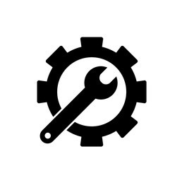

Servicios
En ATX contamos con Servicio Técnico Certificado con la ISO 9001:2008, con personal altamente calificado y especializado, además de la más avanzada infraestructura técnica en servicios de reparación y atención directa, donde el concepto de eficacia es nuestra base de trabajo.

Mantenimiento General
Comprende el traslado del equipo a nuestras instalaciones, para el desembalado total del mismo, con el objetivo de asegurar un excelente funcionamiento y prolongar su vida útil.
Mantenimiento por Llamada de Emergencia
Proporcionamos a nuestros clientes asistencia técnica, con el objetivo de recuperar la condición de óptimo funcionamiento de un equipo cuya falla lo dejó fuera de servicio. Para su comodidad contamos con una línea gratuita: xxx xx xxxx